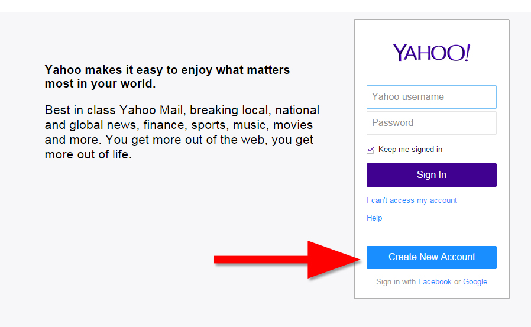
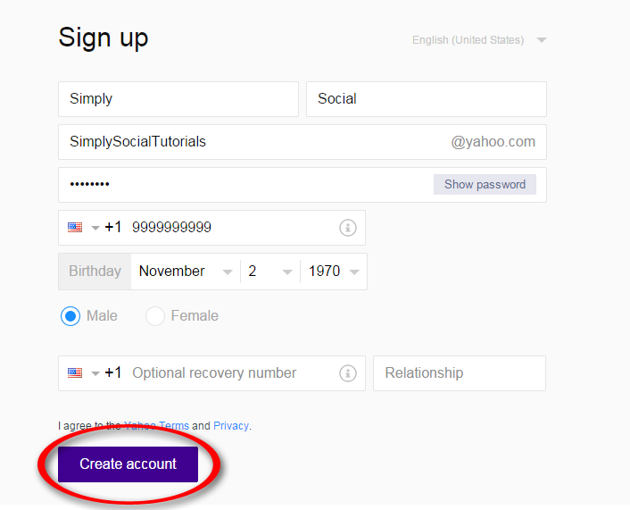
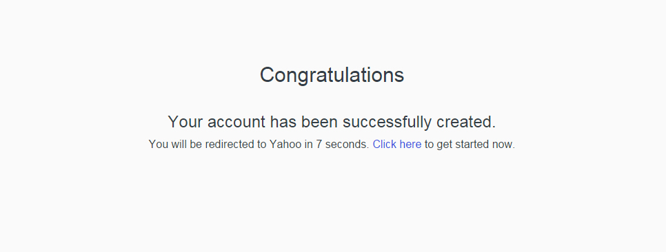
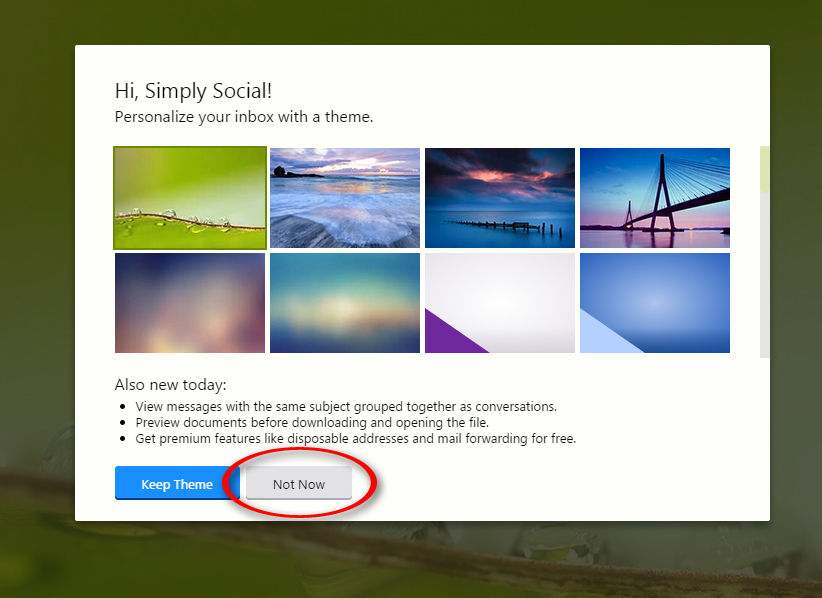
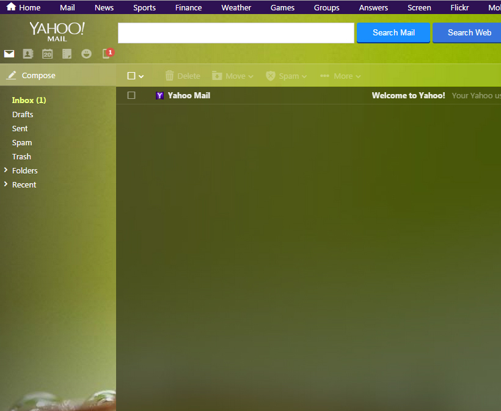

Lesson Navigation
Yahoo
Create an Account
In this section, we will teach you how to create an account with Yahoo mail. First, you need to navigate to the Yahoo Mail website by right-clicking on the button below and selecting "Open in New Tab".
Now, you can switch back and fourth between this tutorial page and the yahoo mail page by clicking on the tabs for each one at the top of your screen. Next, in the Yahoo screen, you want to click on the button that says "Create New Account". See the below diagram for an example.

After you click on "Create New Account" It will bring up a new page. Below, we've detailed how you should fill out
the form that appears on that page, with an example of what the form looks like.
1. Your first and last name go here
2. The yahoo email address name you would like
3. Your password (yahoo will tell you what characters are allowed, and if it is strong enough)
4. Your cell phone number, in order to recover your account if you forget your password.
5. Your full birth date (so they can see if you're old enough to have an account)
6. Your Gender
7. Optional contact information for another person who can help you recover your account.
8. You can click these links to review the terms of service and privacy policy.
When you're all done filling out the form, it should look something like the example below. If your Yahoo username is taken, yahoo will offer suggestions for alternative email addresses you can sign up for.
Example of completed form:
When you've double checked all of your information, you can click the "Create Account" button. (see above diagram for an example)
After you create your account, this screen will appear:

After a few seconds, you will be directed to a page that looks like this:

You can select a theme later, but for now, you'll just click "Not Now". After you click "Not Now",
your inbox will appear. We've placed an example of what that should look like below.

Congratulations! You've successfully signed up for your Yahoo Mail account and you are ready to go. You can go send an email and add contacts by following the instructions in our "Email Basics" tutorials, or you can explore other cool features! Now that you have an account, you're ready to learn about Yahoo security settings. Click "Next Lesson" below when you are ready to move on.


The Simply Social brand is Simply Social Inc. 2014. Simply Social only owns the Simply Social logo, and all other images are copyrighted by their respective owners. The sources for these images, as well as the website icons, can be found in the about page. This website was made for a class project, and is not intended for any kind of commerce or commercial use. Simply Social is not affiliated in any way with any of the other websites mentioned or linked to in this website.